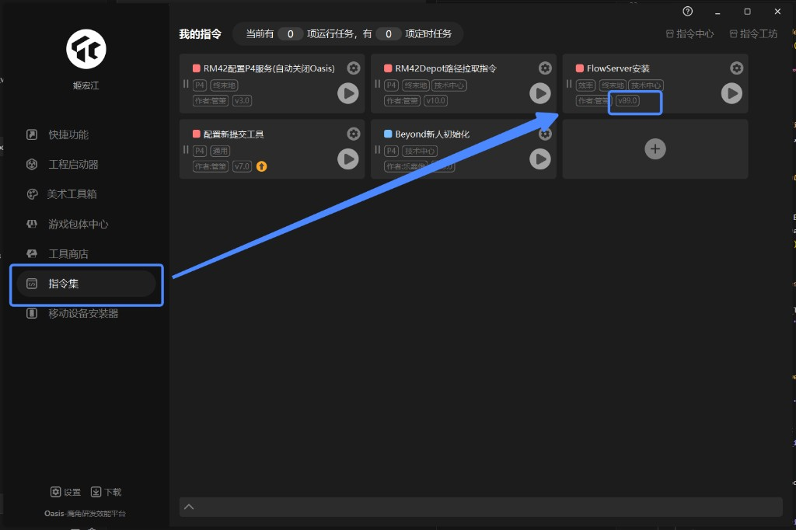

Unity 材质同步
Blender 插件：按选中模型名查询 Unity prefab 的材质信息，并把贴图写入 Blender 模板材质中的预留 Image Texture 节点。
使用前提
- Blender 版本：
5.2.0或更高。 - FlowServer 版本：
89.0或更高。 - Unity 工程已打开。
- Blender 选中的对象必须是 Mesh，且名称必须以
_lod数字结尾，例如S_build_map02_floor+1_006_02b_lod0。
FlowServer 版本检查
请确保用户已安装并启动 FlowServer，版本需要为 89.0 或以上。可在 Oasis 的 指令集 页面查看 FlowServer安装 指令卡片上的版本号。

快速使用
1. 确认 FlowServer 和 Unity 客户端已启动。
2. 在 Blender 中选择目标 Mesh。
3. 确认 Mesh 名称以 _lod数字 结尾，例如 S_build_map02_floor+1_006_02b_lod0。
4. 在 3D View 顶部 Header 点击 同步材质。
5. 如需查看说明，可点击 Header 中的问号图标按钮，或在插件 Preferences 中点击 打开文档，插件会打开本地 HTML 文档页面。
命名规则
模型名到 prefab 名：
S_xxx_lod0->P_xxxSK_xxx_lod0->P_xxx- 其他前缀保持不变，但仍会去掉
_lod数字后缀。
材质匹配规则：
1. 优先按材质名匹配。
2. 匹配时会忽略 Blender 自动生成的 .001 后缀。
3. 匹配时会弱化 _、+ 等分隔符差异。
4. 如果仍未匹配，则按材质槽顺序匹配 Unity 返回的 materials 列表。
模板材质要求
插件会从 ZMD_Lit_Two.blend 复制模板材质，并写入预留 Image Texture 节点。
模板节点要求：
Color：必需，对应 Unity_BaseColorMapNRO：必需，对应 Unity_NormalMapMask：可选，对应 Unity_MaskMap
如果模板中有多个同名或同 label 的 Color / NRO / Mask Image Texture 节点，插件会全部更新，避免保留模板默认图。
常见问题
提示模型不符合规则
选中 Mesh 名称必须以 _lod数字 结尾，例如 _lod0。
提示 metadata 缺少 workspace_dir
Unity 客户端需要在 service metadata 中提供 workspace_dir。插件不再提供手动工程路径输入。
提示连接 FlowServer 失败
请确认 FlowServer 89.0 或以上版本已启动。插件会自动检查通信地址、端口连通性和 NATS 握手状态，并在错误信息中提示是连接超时、端口未监听还是服务类型不匹配。
提示没有检测到 Unity 客户端
说明插件已经能连接到 FlowServer，但没有发现在线 Unity 客户端。请确认 Unity 工程已打开，并且 Unity 客户端已连接到 FlowServer。
提示贴图不存在
检查 Unity 客户端上报的 workspace_dir 是否指向正确工程根目录，并确认返回的 Assets/... 或 Packages/... 路径在本机可访问。
材质仍显示模板默认图
重新加载插件后再次同步。如果仍出现，检查模板材质中的目标 Image Texture 节点名称或 label 是否能匹配 Color、NRO、Mask。
更新说明
0.2.19 - 2026-07-09
- 更新
ZMD_Lit_Two.blend模板材质，保持插件内模板文件名不变。
0.2.18 - 2026-07-09
- 同步结束时自动清理无用户的
*_sync_old旧材质，减少旧材质让名后在材质列表中残留。 - 保留仍有用户引用的
*_sync_old材质，避免误删未参与同步对象仍在使用的旧材质。
0.2.17 - 2026-06-29
- 单次同步内的 prefab 查询缓存改为按完整候选名列表命中，重复 instance 会复用已查询到的 Unity 材质数据。
- 同步同名材质时优先复用已存在的同步材质，避免多对象共享旧材质时生成
.001/.002材质副本。 - 旧共享材质占用目标名称时会先让出名称，确保新同步材质使用干净的 Unity 材质名。
- 同步开始时固定每个材质槽的原始材质名，避免同步过程中材质重命名影响后续槽位匹配。
0.2.16 - 2026-06-29
- 支持选中嵌套 prefab 父级后递归同步子层级中的合法
_lod数字Mesh，并在没有合法子对象时禁用同步按钮。 - 嵌套 prefab 查询优先使用最近的
P_父级名称，并在失败时回退到子 Mesh 名推导出的 prefab 名。 - prefab 查询增加候选名 fallback，兼容
_1_/+1_差异以及导入后产生的__数字_实例后缀。 - 多个子对象同步时，单个 prefab 查询失败不再中断整体流程，并对重复失败的 prefab 做缓存去重。
- 缺少贴图或贴图文件不存在时改为清空对应节点并提示 warning，已有贴图和参数继续同步。
- 选中层级同步时自动隐藏名称以
_shadowProxy结尾的 Mesh，并跳过其材质同步。
0.2.15 - 2026-06-12
- 更新
ZMD_Lit_Two.blend模板材质。 - Node Group 复用逻辑改为按模板实际节点组的基础名和类型动态匹配，不再写死
ZMD_Lit_Two。 - 重复同步材质时复用已有同类型 Node Group，并清理本次 append 出来的重复节点组。
- 普通 Unity
Color参数同步到 Blender 前转换为 Linear，HDR 自发光颜色_EmissiveColor保持 Unity 返回值直写。
0.2.14 - 2026-06-12
- 为同步写入的模板 Image Texture 图片统一设置
Alpha为Channel Packed。 - 兼容新模板中的
三通道_MASK节点名称，确保 Unity 三通道 Mask 贴图能写入对应图片节点。 - 同步材质时清理不再使用的旧材质和临时模板材质，避免重复同步后残留
.001材质或ZMD_Lit_Two_Mat。
0.2.13 - 2026-06-11
- 更新
ZMD_Lit_Two.blend模板材质。 - 同步自发光贴图，并修正自发光 UV 输入名称以匹配新模板。
- 同步 NRO 本体法线贴图、使用本体法线模式、本体法线贴图强度和本体法线 AO 强度。
- 将本体法线、透贴和三通道混合下拉项映射到新模板的枚举文本。
- 同步三通道混合
Off模式下的 R/G/B Color、Scale、Offset、Roughness、Metallic 参数。 - 使用
_EnableTriChannelMask区分三通道混合的不启用和Off模式，避免没有三通道信息时保留模板默认Off。
0.2.12 - 2026-06-11
- 同步执行时增加 Blender 进度显示。
- 同步完成或失败时增加弹窗反馈。
- 模板材质贴图赋值后不再移动节点位置。
- 删除未使用的 Shader Editor 节点布局算法和相关测试。
- 同步固有色模块的 Shader 节点参数：Tiling、Offset、UV 通道、底色、底色覆盖贴图颜色、固有色变亮。
- 同步 NRO 模块的 Shader 节点参数：Tiling、Offset、UV 通道、法线贴图强度、双面材质反转背面法线、使用本体法线。
- 同步 PBR 设置模块的 Shader 节点参数：Specular、最小粗糙度、最大粗糙度、AO 强度。
- 同步自发光模块的 Shader 节点参数：通道、不受固有色影响、颜色、Emissive Speed。
- 同步三通道混合模块的 Shader 节点参数：Tiling、Offset、UV 通道、仅 PC 贴图开关。
- 同步透贴模块的 Shader 节点参数：通道、Clip Threshold。
- 兼容 Unity Tilling/Tiling 字段拼写差异，修复固有色和 NRO 的 Tiling/Offset 未同步问题。
- 支持从 Unity 贴图返回值中的
m_Scale、m_Offset、m_UVSetIndex读取 Tiling、Offset 和 UV 通道。 - 修正自发光通道映射，使用
_EmissiveMaskChannel对齐 Blender 的Base Color A/NRO A选项。 - 自发光通道遇到 Blender 暂不支持的 Unity 选项时改为写入
关闭。 - 修正三通道 Mask 贴图模式映射，使用
Off/Legacy/G With Normal对齐 Blender 下拉选项。 - 同步流程改为 modal/timer 分步执行，减少一次性阻塞并让 Blender 有机会刷新进度状态。
- 点击同步后在校验开始前立即初始化并更新进度为 0，确保耗时校验或同步步骤开始前已有反馈。
- 同步过程中在 Blender 状态栏显示
当前/总数 + 步骤说明，例如查询 prefab、同步具体材质。
0.2.11 - 2026-06-11
- 在调用
nats.connect前增加短超时 TCP 预检查，FlowServer 端口不可用时直接给出中文错误，避免 Blender 长时间卡死。 - 禁用 NATS 自动重连并限制连接超时，减少底层 traceback 重复输出。
0.2.10 - 2026-06-10
- FlowServer 可连接但没有 Unity 客户端在线时，显示更明确的中文提示。
0.2.9 - 2026-06-10
- NATS 连接异常时增加诊断信息，区分地址格式错误、连接超时、端口未监听和 NATS 握手失败。
- 构建脚本排除
.git/目录，避免仓库内部文件进入发布包。
0.2.8 - 2026-06-10
- 简化使用前提中的 Unity 工程说明。
0.2.7 - 2026-06-10
- 精简使用前提，移除 NATS 默认地址说明。
0.2.6 - 2026-06-10
- HTML 文档改为深色主题。
- HTML 文档增加左侧标题目录，支持快速跳转。
0.2.5 - 2026-06-10
- 构建时将
README.md转换为docs/index.html。 文档/打开文档改为打开本地 HTML 页面，支持浏览器滚动和更好的 Markdown 展示。
0.2.4 - 2026-06-10
- 新增
build_package.py，可直接脚本化构建插件安装 zip。
0.2.3 - 2026-06-10
- Header 主按钮文案从
同步Unity材质简化为同步材质，详细说明保留在 tooltip。 - Header 文档入口改为仅显示图标，减少界面占用。
0.2.2 - 2026-06-10
文档/打开文档改为在 Blender 弹窗内显示 README，不再依赖本机默认 Markdown 打开方式。
0.2.1 - 2026-06-10
- 在 3D View Header 增加
文档按钮。 - 在插件 Preferences 增加
打开文档按钮。 - 将 Preferences 中的
通信地址改为只读展示。
0.2.0 - 2026-06-10
- 接入 Unity NATS 查询流程，按 prefab 名获取材质列表。
- 内置
nats-py到vendor/，插件可直接安装使用。 - 支持
S_/SK_模型名前缀转换为P_prefab 前缀。 - 仅允许同步
_lod数字后缀的 Mesh；查询 prefab 时会去掉_lod数字。 - 从 Unity 客户端 service metadata 的
workspace_dir自动解析Assets/...和Packages/...贴图路径。 - 移除测试数据模式和手动 Unity 工程路径输入。
- 使用
ZMD_Lit_Two.blend模板材质，并写入Color/NRO/MaskImage Texture 节点。 - 支持自动重命名前两个 UV 通道为
1U、2U。 - 材质匹配优先按名称，兼容
.001副本后缀和_/+分隔符差异；名称不匹配时按材质槽顺序匹配。 - 缺少必需贴图或贴图文件不存在时直接报错，并清空模板默认贴图，避免误用旧图。
- 改进 Shader Editor 节点自动布局，按依赖关系和节点高度排布。
- UI 保持在 3D View Header 中，按钮名称为
同步Unity材质。 - 文档补充 FlowServer
89.0及以上版本依赖说明和安装入口截图。
0.1.0
- 初版流程：使用 mock 材质数据写入 Blender PBR 材质。
- 提供中文 UI 和基础材质同步 operator。
安装
1. 将 unity_material_sync.zip 安装到 Blender：
Edit > Preferences > Add-ons > Install...- 选择 zip 文件
- 勾选
Unity 材质同步
2. 如果已安装旧版本，建议先禁用再重新启用插件，或重启 Blender。
配置
插件 Preferences 中包含：
通信地址：本地 NATS 地址，只读展示，默认nats://127.0.0.1:14222。超时时间：请求 Unity 材质数据时的超时时间。打开文档：打开插件内置的本地 HTML 文档页面。
交付内容
zip 内应包含完整的 unity_material_sync/ 文件夹：
unity_material_sync/
__init__.py
operators.py
panel.py
preferences.py
material_sync.py
template_material.py
unity_client.py
uv_utils.py
documentation.py
build_package.py
README.md
CHANGELOG.md
ZMD_Lit_Two.blend
docs/
vendor/vendor/ 中已内置 nats-py，使用方不需要额外安装 Python 依赖。
构建发布包
在项目根目录执行：
python addons/unity_material_sync/build_package.py构建脚本会先生成 docs/index.html，再打包插件。默认输出到：
dist/unity_material_sync-<version>.zip也可以指定输出目录：
python addons/unity_material_sync/build_package.py --output-dir D:/Temp